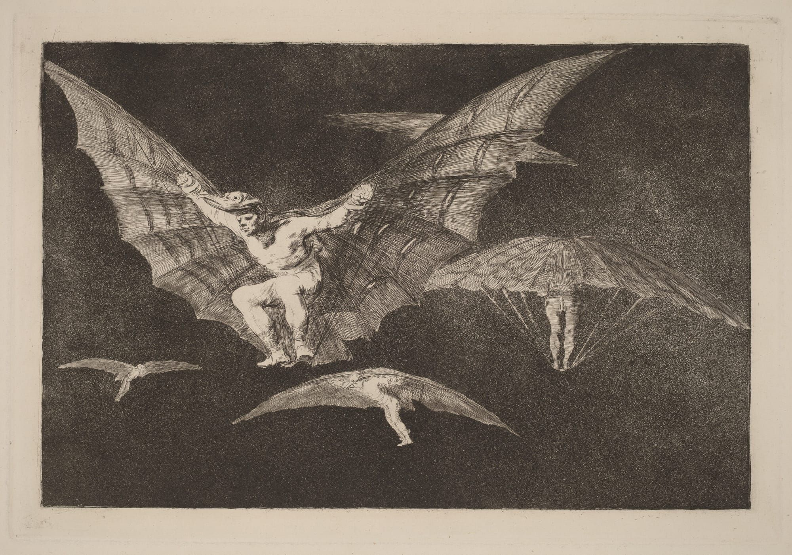

配图是弗朗西斯科·戈雅（Francisco Goya）的《飞行的方法》（Modo de volar / A Way of Flying）。原文用的同一张。
我在做 Claude。这段经历很有意思：几乎每天，我都会听说又一件用 Claude、或者由 Claude 完成的事。有的我没想过，有的我以为做不到，有的只是缺好奇心和时间，从来没试。
就在这个月，它可能帮人发现了一颗新行星；我看到了第一支我真的喜欢的 AI 音乐视频；我们也在讨论数学是不是进了一个新阶段。
模型的能力不是均匀长的。陶哲轩的说法是：模型「在有些方向上惊人，在另一些方向上不够用」。有人已经能驾驭那些惊人的部分，看起来像在飞——看着别人用我参与做的产品飞起来，会上瘾。还有很多人还在摸索这对新翅膀能干什么，除了问「法国的首都是哪里」，或者「能不能把这封邮件写得不那么生气」。
我经常和其他做 AI 的人一起说：用它的时候，我们应该更有雄心。这几乎成了一句口号。每次看到让人印象深的东西，我们就转发，写一句「我们还不够有雄心」。我明白这句建议有多难照做，所以写下这份教程。
我把雄心分成四类：速度、高度、深度、广度。
- 速度（Speed）：同样的工作用更少时间。这是 AI 经济价值里最现成的那一块：你要写代码，我和 Claude 会写得更快。已经很成熟，用法上也不需要太多创造力，所以这一节我跳过。
- 高度（Altitude）：往抽象上走一层，想的是结果，不是眼前这一项任务。
- 深度（Depth）：按这个领域最强的人会怎么做来想这件事。不要停在任务那一层，往下碰到底下的数据、工具和问题。
- 广度（Range）：不只用这件事表面上需要的那一个领域，把你平时不会用的知识、工具和技术也拉进来。
我主要用 Claude（这不奇怪）。下面这些办法不绑某一个模型。
1高度
我们常随口说「让模型在更高的抽象层次上干活」。你把一项任务交给模型，它执行的是你对「怎样得到想要的结果」的最佳猜测。
想在高度上更有雄心，先问自己——你希望接下来发生什么？目标之外的那个目标是什么？去年年初，我还在让 Claude 一个一个修崩溃。后来我改成：让我们的应用保持不崩溃。
看一件日常到不能再日常的办公室活。你在虚构的 Acme Inc，要做一份季度业务回顾（QBR）。给一堆数据，Claude 会很乐意做幻灯片。也许你还有模板，它只要填进去。这跟发现一颗新行星没法比。下面从最基本的一步步加码。
多数回顾想知道的是：这个季度变了什么、为什么、该怎么办。不要只改模板里的数字。把你能拿到的数据尽量给它，让它理解这门生意：「告诉我这个季度变了什么、为什么、我们该怎么办。」
好的会，开完应该有决定。再问 Claude：「根据你刚了解到的一切，找出最急的三个决定，并开始写可能的方向，每个都带赞成和反对。」
季度回顾来自一个时代：好的回顾需要人仔细筛数据、弄清数据是什么意思、生意要不要调。你可以问 Claude：「这份回顾存在，是为了让管理层早点抓住问题，把钱和人挪到该去的地方。请设计一个比季度幻灯片更好的办法来做这件事，用我们自己的历史证明它当时能更早抓住，然后和现在这套并排跑一个季度。」
高度这条路，适合你真的在追一个最终结果；不太适合纯创作。一个好用的信号是：你接下来要开会讨论手头这件事。现在仍有边界（「Claude，去赚钱」在 2026 年对大多数生意本身还走不通），但我大致看到：模型越强，能在越高的抽象层次上干活。
高度也是人们找到能把人从循环里拿出去的、能长期跑的工作流的地方。你不必再一件一件地喂任务。这件事要做好，常常得先改你自己的流程——为了让 Claude 保证应用不崩溃，我得先让它方便拿到崩溃报告，搞清每个应用版本对应哪一次 git 提交，还要给它 Windows、macOS 和 Linux 的机器，好让它自己复现、自己验证修没修好。
2深度
有时候你就是想把一件任务做得很漂亮。深度上的雄心，是推动模型去用这个领域最强的专业人士会用的工具、技术、媒介和知识——并且一直往下推，直到连那些人也可能从你的工作里学到新东西。
还是 Acme Inc 那份季度回顾。假设公司在丢用户。我发现下面这几条混着用有用：
坚持用这个行业最好的人用的器具。你让模型表现得像专业人士，它常常只换词，不换方法。要在深度上处理这个问题，就得用最好的数据科学家和统计学家会用的工具。Claude 一伸手去拿 Markdown 表格，就坚持要数据库和统计模型。你不必先知道专家用什么，Claude 通常知道。
定一个看起来不合理的目标，并且告诉模型它非常合理。网站要从 10 秒加载降到 5 秒？那就要求 200 毫秒。模型觉得某件事不可能？再跟它说一遍：这完全能解，它只要继续做。
挑战你以为自己知道的事。尤其在生意里，很多我们当成真的东西，只是对现实的粗略近似。把原始信息和数据给模型，让它站在对面检查这些假设。「我们相信流失是新手引导的问题。请用原始数据把这个说法重做一遍。」
造出新的知识。很容易接在上一条后面——Claude 已经钻进数据里了，就让它找盲点。「用我们的日志搭一个能重放过去一年的客户模拟。然后找出一个我们还不知道的、最早的流失信号，并证明它在没见过的数据上也能预测。」
用一个外面的裁判。不要让模型审自己。我假定这件事迟早会随着模型变强而解决，但在 2026 年 10 月，我恳请你坚持要外部验证。最理想的是一个模型能自己跑、立刻拿到反馈的工具。
一段经常帮到我的提示：
3广度
一句话：广度上的雄心，是从不同领域的视角看我们的工作——比过去划算得起的领域还要多。这不是多新的见识，每一部抢劫电影前 30 分钟都在凑一班各有本事的人。AI 产品越来越容易跑多代理系统（多线程、编排器，或者只是子代理），我看到过很有意思的结果，来自恳请 Claude 把别的领域带进来。
落到手上并不容易，要你自己会想。直到看见同事 Alex Albert 用 Blender 渲染室内设计，我才想到可以用 Claude 给我的主页做三维环境——尽管我以前做过电子游戏。不过，魔法最多发生在这里。
怎么做？我用下面这些办法：
试着把名词换成动词。这是 Tom Kelley 和 Jonathan Littman《创新的艺术》（The Art of Innovation）里的老招。季度回顾不是「一份幻灯片」。它是「让忙的人相信一个关于因果的故事，并且在不确定的情况下做决定，用时 30 分钟」。有了动词，我和 Claude 都更容易看清：哪些领域可能带来独特、有用的视角。
把班子凑齐。这份幻灯片必须做到极致，否则外星人会把地球炸掉。人类会凑怎样一支队？为了制作质量，我会找分析师、记者、编辑。如果还要上台讲，大概再加动作和声音设计。找一支唱反调的「红队」也可能有用，那就再请做空的人和法务会计。
一不小心就会滑进角色扮演，记录变得古怪，结果并不更好。用这个办法是为了找到领域和方法。不要让模型写得像做空的人，让它去做空的人研究仓位时会做的事。
我描述的这些雄心，都要求模型有一台能装软件的电脑，并且能碰到各种相关数据（MCP 连接器或其他办法）。不少工具已经能做到，我建议你用一个。
4我们以前也到过这里
上面就是我关于怎样更有雄心的具体建议。如果你愿意再停一分钟，我想说说为什么我觉得这件事现在有必要。
人一直被自己以为可能的事情挡住——更糟的是，我们通常只在很窄的几个学科里相信自己。米开朗基罗出名地不想画西斯廷教堂：你看，他是雕塑家，不是画家。
研究雄心这个问题时，我知道心理学给它起了个名字：自我效能（self-efficacy）。简单说，自我效能高的人更相信自己的能力，做成的也更多。有证据表明自我效能可以「黑」一下：Locke 和 Latham 翻了 35 年的目标设定研究，很有把握地说，给人具体的难目标，比只告诉他们尽力而为表现更好。Stripe 创始人 Patrick Collison 维护一份 「Fast」清单，记下人在既有大胆目标又有紧期限时做成过的许多事。一些记录得很清楚的办法：
做成难事，靠相信它做得到。1939 年，George Dantzig 迟到进了伯克利的统计课，把黑板上两道题抄下来当作业交了。那是统计学里两道还没解开的题。
做成难事，在看见别人做成之后。人追四分钟一英里追了几十年。Roger Bannister 1954 年 5 月打破它，但作为唯一破这个纪录的人，他只当了 46 天。如果你跑步，我们正在两小时马拉松上看类似的事：Sabastian Sawe 今年 4 月在伦敦跑出第一个官方的两小时以内。同一场比赛，第二名也破了。
做成难事，靠给自己搞砸的许可。好像人人最爱的商业书是《网球的内心游戏》（The Inner Game of Tennis），我上周才发现。这本书的核心论点是：你拼命想打好的时候，打不出最好的网球。做工程的人大概还记得 Linux，宣布的时候是「只是个爱好，不会像 gnu 那样又大又专业」。
自我效能不是新问题，但现在更有力。能力每隔几周就跳一次的世界里，我们需要一些办法，去做自己原先没认真想过、也不太相信做得到的事。你要是找到更多能让自己更有雄心的办法，请告诉我。
5出处
这篇是译文。原文 Felix Rieseberg，How to be more ambitious: A tutorial for humans with models，2026-10-13。配图来自原文使用的戈雅版画。self-efficacy 词条、Locke 与 Latham 的回顾、Patrick Collison 的 Fast 清单、Dantzig、Bannister、Sawe、Linux 公告，都按原文转述，没有另核。